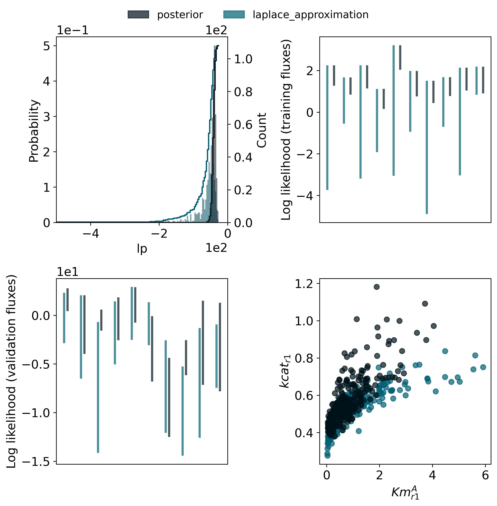
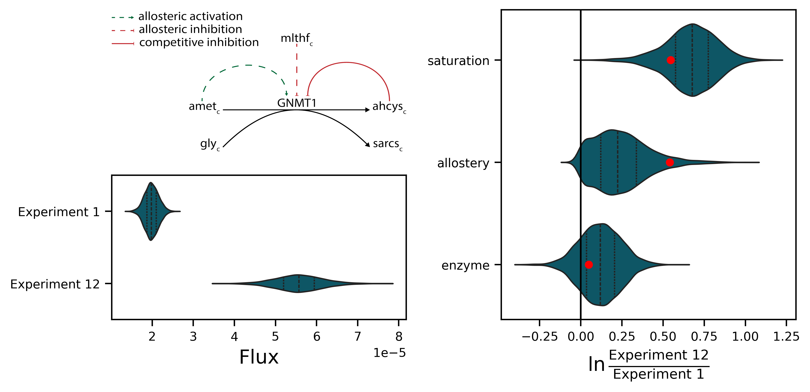

Hierarchical Bayesian regression modelling predicts biochemical rection energies and facilitates quantitative modelling of cell metabolism
Teddy Groves ![]()
This paper presents Maud, a command-line application that implements Bayesian statistical inference for kinetic models of biochemical metabolic reaction networks. Maud takes into account quantitative information from omics experiments and background knowledge, as well as structural information about kinetic mechanisms, regulatory interactions and enzyme knockouts. Below, we review the existing options in this area, explain how Maud improves on the state of the art, describe the intended modelling workflow and illustrate its use with an example application.
Introduction
A kinetic model of cellular metabolism aims to express what is known about a cellular process in the form of an in silico representation of the underlying network of chemical reactions. Kinetic models can be used to improve production of target molecules, determine regulatory networks (Christodoulou et al. 2018) and identify potential drug targets (DeBerardinis and Chandel 2016; Liberti et al. 2017). However, the use of kinetic models in practice is hindered by their dependence on noisy and uncertain information sources. Quantitative in vivo measurements of chemical abundances, and in vitro measurements relating to kinetic parameters, both contain vital information but are notoriously inaccurate (REFERENCES). Practically useful kinetic modelling therefore requires a principled statistical approach that encompasses multiple possible model parameterisations.
Bayesian statistical inference can combine the structural information implicit in kinetic models with knowledge about metabolic parameters and information from omics measurements (P. A. Saa and Nielsen 2016; Gopalakrishnan, Dash, and Maranas 2020). However, kinetic models pose serious computational challenges for Bayesian inference (Gutenkunst et al. 2007; A. Raue et al. 2010).
The scope of a kinetic model is defined by a stoichiometric matrix, \(S\), in which rows represent metabolites, columns represent reactions, and matrix elements \(s_{ij}\) represent the stoichiometric coefficient of metabolite \(i\) in reaction \(j\). The change in metabolite concentrations is:
\[\begin{equation}\label{eq-1} \frac{dC}{dt} = S\cdot v - \mu\cdot C \end{equation}\]
In equation \(\eqref{eq-1}\), C represents a vector of metabolite concentrations, \(v\) is a vector of reaction rates, and \(\mu\) is the growth rate. The second term represents the dilution due to cell growth.
In a kinetic model, the rates, \(v\), are expressed as a function of the enzyme concentrations, \(E\), the metabolite concentrations, \(C\), and a set of parameters, \(\theta\) as shown in equation \(\eqref{eq-2}\)
\[\begin{equation}\label{eq-2} v = f(C, E, \theta) \end{equation}\]
The parameters must include sufficient boundary concentrations and fluxes to solve \(\eqref{eq-1}\).
It is common to assume pseudo-steady state for metabolites, i.e., the rate of fluxes towards any metabolite is much greater than the rate of change in concentration, \(ùë£ \gg \frac{ùëëùê∂}{ùëëùë°}\). Moreover, the dilution effect is assumed minimal, \(\mu\cdot C \ll \vec{v}\) (true unless the concentration is very high). Finally, the enzyme concentration is assumed constant for the period considered and hence part of the parameters.
Given these assumptions and a set of values for , a set of steady state metabolite concentrations and fluxes can be found by solving for \(C\) the algebraic equation:
\[\begin{equation}\label{eq-3} S\cdot f(C;\theta) = 0 \end{equation}\]
In a fermentation context, \(\eqref{eq-3}\) captures the rapid kinetics inside the cell, while another set of ODEs would be used to describe the external substrate and product concentrations, which could act as boundary parameters to \(\eqref{eq-3}\).
In the context of kinetic modelling, Bayesian inference is appealing because it allows uncertainty to be represented appropriately without sacrificing mechanistic accuracy. Measurement uncertainty can naturally be represented in a Bayesian measurement model, whereas the prior model can represent quantitative uncertainty about kinetic parameters. Finally, kinetic rate laws can be represented in Bayesian data generation models with arbitrarily high fidelity. See (REFERENCES) for more about Bayesian inference and (REFERENCE) for a discussion of practical Bayesian workflow.
Another advantage is that Bayesian inference problems are well-posed even when not all parameters are strongly identified. Sloppy models in which measurable quantities are sensitive to combinations of parameters but not to individual marginal parameter values are ubiquitous in models of biological systems (Gutenkunst et al. 2007; White et al. 2016). The parameter correlation structure represents the set of potential models that describe the observed data. As we demonstrate in our case study below, capturing this correlation structure is difficult outside a Bayesian context.
Previous Bayesian kinetic models have either sacrificed mechanistic accuracy or have attempted to fit realistic kinetic models using obsolete or unreliable computational methods.
The most popular algorithm for fitting Bayesian statistical models is Markov Chain Monte Carlo (MCMC). Modern MCMC algorithms allow exploration of high- dimensional posterior distributions, have robust failure diagnostics (Vehtari et al. 2021) and can incorporate fast numerical solvers, thereby making inference feasible for Bayesian kinetic models. Nonetheless, the kinetic modelling literature reports an aversion to MCMC, rooted mainly in concerns about sampling time and the presumed difficulty of implementing the required statistical model (Andreas Raue et al. 2013; P. A. Saa and Nielsen 2016). We are only aware of two recent attempts to implement a Bayesian kinetic modelling approach using MCMC. Stapor et al. (2018) fitted detailed kinetic models using relatively inefficient MCMC algorithms that do not scale well to high dimensional parameter spaces limiting the scope of modelling. Conversely, St. John et al. (2018) utilises an efficient sampling algorithm but uses approximate kinetics, namely lin-log kinetics Visser and Heijnen (2003), limiting the scope of interpreting parameters and inferring cellular behaviour in experimental conditions outside the reference dataset.
There have also been efforts to implement Bayesian inference for kinetic models without the use of MCMC. Examples of alternative inference methods include variational inference as in St. John et al. (2018), rejection sampling and approximate Bayesian computation P. A. Saa and Nielsen (2016) and Laplace approximation, in which the Fisher information matrix is used to calculate a normal approximation around the maximum a posteriori parameter configuration (Liebermeister and Noor 2021; Gopalakrishnan, Dash, and Maranas 2020; Stapor et al. 2018; Andreas Raue et al. 2013). Non-MCMC-based Bayesian kinetic models have limited utility because they lack reliable diagnostic tools for verifying that their results approximate the target posterior distribution. This is a problem because realistic kinetic models tend to induce highly correlated, non-Gaussian, joint probability distributions (Gutenkunst et al. 2007; Stapor et al. 2018).
Our application Maud is the first Bayesian kinetic model to combine biologically realistic mechanistic accuracy—including accurate rate laws, post- translational modification and thermodynamics—with fast, robust MCMC sampling using adaptive Hamiltonian Monte Carlo. Further, Maud is a general-purpose application that can be used to fit a wide range of Bayesian kinetic models.
Results and Discussion
To demonstrate our application’s capabilities, we used Maud to analyse an artificial dataset based on the human methionine cycle. We first used Maud to generate simulated training and validation measurements based on plausible parameter values, then performed posterior sampling. Next, we used Maud to predict the validation data.
To show that Maud is robust to missing measurements we compared the results of fitting the full dataset with an intentionally incomplete dataset. To demonstrate why a full Bayesian approach is preferable to an approach based on a Laplace approximation of the posterior distribution, we also fit our methionine cycle model using the latter method and compared the results with MCMC sampling.
Finally, we investigated our results to find out what our model learned about the contributions of different regulatory factors to the flux through GNMT, an important reaction. This analysis illustrates how Maud can be used to generate actionable insights about metabolism without the need for further statistical analysis.
The methionine cycle, illustrated in Figure 1, is a fundamental pathway in human metabolism, whose intermediate metabolites participate in a variety of mechanisms which must compete for the same resources. Due to this competition, as well as the fact that all the functions occur simultaneously, the methionine cycle is highly regulated, with 6 known allosteric effectors (REFERENCE). This complex regulation means that quantitative modelling of the methionine cycle requires a detailed kinetic model: this is why we chose it as a case study for Maud.
Dataset and model specification
The simulated dataset and underlying kinetic model that we used for our analysis can be found in [#Supplementary Info].
We constructed a kinetic model of the methionine cycle in Maud’s format using the description in Korendyaseva et al. (2008). The ordinary differential equation system describing this model is shown in Equation \(\eqref{eq-meth-ode}\).
After specifying the qualitative aspects of the kinetic model, we selected parameter values to use as ground truth by Monte Carlo sampling using a previous model of the methionine cycle as a starting point (see P. Saa and Nielsen (2015) for this model).
We used these parameters to simulate steady states in a range of plausible experimental conditions, again using P. Saa and Nielsen (2015) as a starting point. These steady states were then used to generate simulated measurements using the measurement model described below.
\[\begin{equation} a = b \label{eq-meth-ode} \end{equation}\]
Measurement model
Generating an artificial dataset required a specification of the true measurement error; we specified a standard deviation of 0.1 on logarithmic scale for enzyme and metabolite concentration measurements, corresponding to approximately 10% measurement error and a standard deviation for each reaction measurement approximately 10% of the simulated value.
These measurement error specifications are somewhat optimistic considering the many sources of variation and uncertainty affecting quantitative proteomics, metabolomics and fluxomics analyses, but are a reasonable first approximation to a realistic set of measurements.
For our main model run, we assumed that all metabolite and enzyme concentrations were measured, and that there was a reaction measurement for each of the network’s elementary flux modes.
Training/validation split
The training testing split was selected to achieve a large difference between the fluxes of the training and testing dataset. The split was determined as we are interested in showing how our model can fit to varied conditions, and conditions closer to the training set are likely to be predicted well without necessarily learning the system.
Additional dataset with missing measurements
To gain insight into our model’s robustness to missing measurements, we also performed a model run with the same 6 experimental datasets, but with measurements of the metabolite S-Adenosyl-L-homocysteine, or “ahcys” removed. Since ahcys regulates three enzymes in the methionine cycle, including one enzyme which is also thermodynamically regulated, we expected the removal of these measurements to yield interesting results.
Maud input specification
We constructed inputs in Maud’s format for each of the analysed datasets, based on the scenario that the true kinetic model was known except for parameter values, which needed to be inferred from the training data and priors. These inputs can be found at XXXX.
The prior distributions and corresponding true parameter values used in our case study are shown in [Supplementary]. The first two columns show the 1% and 99% quantiles of each marginal prior distribution. True parameter value are shown in column three, and the last column shows the z-score on log scale of the true parameter value according the marginal prior distribution. As seen in table 2 [REFERENCE] there are 7 parameters for which the true value is outside the 1%-99% range. This is desirable, making the case study more realistic, because extreme deviance from the prior distribution is likely to occur in practice due to in vivo to in vitro measurement differences.
Computation
We conducted adaptive Hamiltonian Monte Carlo sampling for the full and missing- -data datasets, obtaining XXX post-warmup samples after XXX of total computation time. For the Laplace approximation comparison, we used Maud’s Laplace mode. Full details as well as instructions for reproducing our analysis can be found at XXX.
Findings
Posterior inference
Running standard diagnostic checks indicated that the samples we generated were from the target posterior distribution. The improved \(\hat{R}\) statistic (Vehtari et al. 2021) for every sampled variable was within 1% of 1, indicating appropriate mixing within and between Markov chains. Additionally, the number of effective samples was high, indicating that we generated enough posterior samples to support inferences about the bulks of the distributions of the sampled parameters. Furthermore, we observed no post warm-up divergent transitions, indicating that the sampler was able to transform the log-posterior distribution, avoiding any regions with excessive curvature that might inhibit exploration via HMC.
Posterior predictive checking indicated that our model achieved a good fit to the simulated reaction and metabolite concentration measurements, as shown by the graphs in the top row of figure 3. Note that the fit was good for both training and validation measurements.
Analysis of the posterior distributions for kinetic parameters indicated that these are highly correlated. The marginal posterior distributions for most kinetic parameters did not shrink significantly compared with the corresponding marginal prior distributions, even though these parameters’ joint posterior distribution contained enough information to make accurate out of sample predictions. In some cases, there were two-dimensional correlations such as the one shown in the bottom left of figure 3; in this case the marginal distribution of the two parameters is roughly banana shaped. More commonly, however, two-dimensional pair plots were insufficient to reveal the underlying correlation structure, as seen in the bottom-right plot in figure 3. This does not mean that the parameters were uncorrelated, but rather that the correlations involve more than two parameters.
Overall, our results show that Maud can fit a realistic pathway-sized dataset. This was achieved without fixing the marginal values of kinetic parameters: the information required to make good predictions was contained in the correlation structure of the joint posterior distribution. This finding is consistent with previous analyses of biological systems that found they are “sloppy”, that is, sensitive to parameter combinations rather than marginal parameter values, with important combinations, scales and regions of sensitivity being difficult to ascertain in advance Gutenkunst et al. (2007), Poirier (1998).
The question naturally arises whether the crucial high-dimensional parameter correlations are linear or non-linear. This is relevant to the question of model performance, as linear correlations are easier to correct for. A linearly correlated posterior space would also be easier to summarise. We address this question below in section XXX.
This case study illustrates the type of kinetic model and dataset that Maud can fit. The model we analysed has XXX reactions, XXX state variables and XXX parameters. Posterior sampling with adaptive Hamiltonian Monte Carlo generated XXX ESS/hour. Generalising from this result, we conclude that it is feasible to use this method to fit models in the same order of magnitude, but not, for example, genome-scale kinetic models. To fit larger models, faster steady state solving methods or alternative inference algorithms will be required. Section XXX addresses whether Laplace approximation is a suitable candidate.
Comparison with Laplace approximation
We found that the Laplace method was not able to produce an accurate posterior approximation for our model and dataset.
The Laplace approximation yielded XXX samples in XXX time. The diagnostics indicated that our algorithm was able to find the maximum a posteriori parameter configuration, approximate the Hessian and use these quantities to generate approximate posterior samples. The results can be found at XXX.
Figure 2 summarises the results of comparing the Laplace approximation of our case study’s posterior distribution with the true posterior. As can be seen from the top left plot, the Laplace method does not provide a good approximation to the true posterior distribution, as the marginal distribution of the total log probability density is clearly different. This was confirmed using the Kolmogorov-Smirnov test, which is a test to differentiate two empirical univariate distributions. The two distributions were significantly different with a p-value indistinguishable from 0.
The difference between the Laplace approximation output and the true posterior distribution manifests itself not only in the parameter space, but also in the measurement space. Figure 5 frame B compares the 5%-95% interval for flux measurement log likelihoods in the true posterior with the Laplace approximation; lower log likelihood values indicate that the modelled and measured values are further away. The graph shows that the Laplace approximation yielded significantly worse predictions than the true posterior, even for the training data.
To further explore why this is the case we compared samples from the true posterior and the Laplace approximation for the pairwise marginal distributions of two Michaelis-Menten constants [LATEX CONSTANT]- and [LATEX CONSTANT]: see the bottom right cell of figure 5. This comparison demonstrates that the Laplace method is not able to capture the correct relationships between parameters’ distributions.
This result shows that MCMC, while slower than Laplace approximation, is unfortunately preferable for posterior inference in this case. We expect that this is typical of kinetic models of realistic metabolic networks in general, so we recommend that Maud users use MCMC sampling if possible.
Our results here also provide circumstantial evidence that the parameter correlations in Bayesian kinetic model posteriors tend to be non-linear, as a posterior with only linear correlations would likely be more germane to Laplace approximation. A conclusion that we drew from this analysis was that the results of fitting our model cannot be summarised simply, for example by fitting a multivariate normal distribution to the posterior draws. We therefore recommend that Maud users store the full set of MCMC draws rather than using such an approximation. This does not preclude the possibility that there is an alternative, more compact, way to summarise the results of Bayesian kinetic model inference; we leave research into this topic to future work.

Effect of missing metabolite concentration measurements
Comparing model runs with and without the ahcys measurements showed that Maud can produce sensible results even from incomplete metabolomics data.
Figure 3 shows that, as might be expected, the model with missing measurements did not correctly infer the missing ahcys concentrations. Nonetheless, the remaining measured metabolites were still well predicted, suggesting that information about the network is still preserved despite the missing measurements. Comparison of flux measurements in both models also indicated that removing the ahcys measurement did not result in catastrophic model failure.
The missing measurements did affect Maud’s ability to infer parameter values correctly. As we can see in the #lower left plot of 3, the model with full metabolomics learned the true value for the displayed dissociation constant, despite this value being far from the mean of the corresponding marginal prior distribution, whereas the model with the missing measurements stayed in the neighbourhood of the prior.
This result is reassuring because not having access to all measurements is a common situation in multi-omics studies. For instance, measuring all metabolites in a pathway can be infeasible because of limitations of mass spectrometers, availability of standards, column effects, and compartmentalisation. However, provided that sufficient information is available from other sources, our approach can produce sensible results from incomplete metabolomics data.

Application to regulatory understanding
To investigate how the flux of GNMT between conditions [X] and [Y] changes we compared the regulatory contributions in the posterior distribution. Presented in Figure 4 is the regulatory description of GNMT, an irreversible enzyme that is homotropically activated by its substrate, competitively inhibited by its product and heterotropically inhibited. The diverse regulation makes it the ideal test case to elucidate regulatory changes.
Here we found that saturation and allosteric effects were the main drivers of regulation between the two conditions. Figure 4 shows the distributions of the regulatory components as the log-ratio of each component with [X] in the numerator and [Y] in the denominator, positive values suggest that this component was increased in experiment [X] relative to [Y], with 0 indicating no difference. Naturally, this presents the ideal statistical test when evaluating the regulation, with the probability of regulation given by the relative proportion of samples above and below the 0 point.
We demonstrate that Maud can accurately reproduce the regulatory effect between the two conditions by comparing it to the ground truth. As the true values are well within our probability mass of the posterior we can say that Maud is able to accurately reproduce the regulatory behaviour of metabolic networks and also provides a tool for statistical inference of the regulatory behaviour.
Here we have demonstrated a key feature in Maud, that is, direct inference on any parameter that arises from the data generating process. More succinctly, we show the benefit of error propagation that Bayesian inference provides as researchers can directly use quantiles for hypothesis testing.
Our tool allows inference directly on the joint posterior distribution rather than the marginal parameter. The implication is that inference will be better than that of the marginal distributions due to correlated parameter values, if the data generating process can be directly modelled.

Methods
Maud is a command line application implementing Bayesian inference for a wide range of realistic kinetic models. Maud is written in Python (Van Rossum and Drake 2009), designed for use on Windows, macOS and Linux, registered on the Python Package Index as maud-metabolic-models, documented at <https://maud- metabolic-models.readthedocs.io> and actively developed and maintained at https://github.com/biosustain/Maud/.
To use Maud, a user must first collate appropriate input information, represent it in files with Maud’s required formats (see section (REFERENCE)below). Maud’s command line interface provides commands for inference, simulation and making out-of-sample predictions. Results are stored in files, using a structured, interoperable format.
Input format
Maud inputs are structured directories, somewhat inspired by the PEtab format Schmiester et al. (2021). A Maud input directory must contain a toml (Preston-Werner, Tom and Gedam, Pradyun 2020) file called config.toml which gives the input a name, configures how Maud will be run and tells Maud where to find the other files, allowing these to have custom names. It must also include a file containing a kinetic model definition, a file specifying information about parameters and a file with information experiments. The required structure of these files is documented at <https:// maud-metabolic-models.readthedocs.io/en/latest/inputting.html>. The input is validated against a Pydantic (Pydantic developers 2022) data model which can be inspected at https://github.com/biosustain/Maud/tree/main/maud/data_model.
We chose to implement a custom input format despite the existence of standard formats in similar areas, including SBML (Keating et al. 2020) and PEtab (Schmiester et al. 2021). This choice was partly motivated by the need to ensure flexibility as Maud was developed, but there are also features of SBML and PEtab that make them structurally unsuitable in this context. Our requirements for an input format included that it be mathematics-free, so that all mathematical details are encapsulated in source code, and that it has a detailed, verifiable structure. These requirements made toml more attractive than SBML: toml is easier for humans to read and edit and can straightforwardly be validated using tools like Pydantic. Further, an SBML representation of our desired input would not contain differential equations. It would therefore not be interoperable with most SBML targeting software, which typically assumes that differential equations are available and does not know about Maud’s structure.
Kinetic model
Maud’s kinetic model decomposes into factors as shown in equation \(\eqref{eq-decomposition}\).
\[\begin{equation} F(C;\theta) = Enzyme\cdot k_{cat}\cdot Reversibility \cdot Saturation \cdot Allostery \label{eq-decomposition} \end{equation}\]
Each of the terms on the right-hand side of (REFER TO EQUATION) is a function of \(C\) and \(\theta\). This idea is taken from Noor et al. (2013). The terms usefully gather physically meaningful and conceptually distinct factors contributing to reaction fluxes. \(Enzyme\) captures the effect of enzyme concentration, \(k_{cat}\) that of enzyme efficiency, \(Reversibility\) quantifies thermodynamic effects, \(Saturation\) the effect of enzyme availability and \(Allostery\) the effect of post translational modifications.
We used the model of enzyme saturation from Liebermeister, Uhlendorf, and Klipp (2010) and the generalised Monod-Wyman-Changeux model of Allosteric regulation introduced in (Monod, Wyman, and Changeux 1965; Changeux 2013; Popova and Sel’kov 1975, 1979) and used more recently in Matos et al. (2022). To capture the effect on enzyme activity of coupled phosphorylation and dephosphorylation processes we developed a new mathematical model inspired by the generalised MWC model of allosteric regulation. Full details of all mathematical aspects of Maud’s kinetic model can be found in supplementary material section (REFERENCE).
Statistical model
Maud represents information from measurements using generalised linear regression models that probabilistically connect realised measurements with true values of the measurable quantities. Information from other sources is represented using a prior distribution over a set of latent parameters. The parameters and the measurable quantities are connected by a generative model encompassing Maud’s kinetic model as well as the steady state equation \(\eqref{eq-3}\). Together, the measurement model, prior model and generative model determine a joint probability function that assigns a probability density to any possible combination of measurements and parameters.
Below we describe the prior and measurement models, as the generative model has already been discussed above.
Prior model
Maud’s prior model includes unknown parameters corresponding to quantities in the kinetic model that are assumed to be unknown, other than steady state metabolite concentrations and fluxes, which are derived from the values of other parameters by solving the steady state problem. See Table 1 (REFERENCE) for a description of all these parameters and their dimensions. Note that some quantities in Maud’s kinetic model are not treated as parameters: for example, temperatures, compartment volumes and the formation energy of water. Maud treats these quantities as if they were known precisely: they can be configured by the user or default values can be used. Although in practice there can be considerable uncertainty regarding these quantities, we chose to disregard this uncertainty in the interest of simplicity.
Except for metabolites’ standard condition Gibbs energy changes of formation, Maud uses independent normal prior distributions for parameters that can in principle be both negative and positive. For parameters that are constrained to be positive, Maud uses independent log-normal distributions. Formation energy parameters have a multivariate normal prior distribution. Location, scale and covariance parameters for all these prior distributions can be selected freely by the user.
Measurement model
Maud‚Äôs measurement model considers three types of measurement: metabolite concentration measurements, enzyme concentration measurements and flux measurements, represented by vectors \(ùë¶^{ùëêùëúùëõùëê}\) \(ùë¶^{ùëíùëõùëß}\) and \(ùë¶^{ùëìùëôùë¢ùë•}\) respectively.
All measurements are specific to an experimental condition; that is, a case where the true state of the network, including knockouts, boundary conditions and state variables as well as kinetic and thermodynamic parameters, can safely be assumed to be the same. Maud’s statistical model allows for arbitrarily many experimental conditions, and for any measurable quantity to be measured any number of times in any condition.
Metabolite and enzyme measurements are intended to represent the results of quantitative metabolomics and proteomics experiments. The likelihood functions for such measurements are shown in equations Equation \(\eqref{eq-yconc}\) and Equation \(\eqref{eq-yenz}\).
\[\begin{equation} y_i^{conc} \sim LN(\ln{\hat{y}_i^{conc}}, \sigma_i^{conc})\label{eq-yconc} \end{equation}\]
\[\begin{equation} y_i^{enz} \sim LN(\ln{\hat{y}_i^{enz}}, \sigma_i^{enz})\label{eq-yenz} \end{equation}\]
Both equations are log-normal generalised linear models with a standard link function (the natural logarithm \(\ln\)) and known standard deviation $ _{ùëêùëúùëõùëê}$. The use of this measurement model is motivated by the consideration that concentrations are constrained to be non-negative, so the measurement model should avoid assigning positive probability mass to negative metabolite concentration values. In addition, we expect the precision of most metabolomics and proteomics experiments to be roughly proportional to the value of the true measured quantity, which supports a measurement model with constant coefficient of variation. The measurement standard deviations \(\sigma_{ùëêùëúùëõùëê}\) and \(\sigma_{ùëíùëõùëß}\) are assumed to be known exactly for simplicity; plausible values can be elicited by considering the likely coefficient of variation of the measuring apparatus.
Flux measurements, representing the results of quantitative fluxomics analyses, are modelled using a likelihood function from a standard linear regression model, as shown in equation \(\eqref{eq-yflux}\). Flux measurements can be obtained from the results of isotope labelling experiments using metabolic flux analysis, for example as described in (Young 2014). When entering flux measurements, it is important only to specify measurements for a network’s free fluxes, as the values of some steady state fluxes in a metabolic network are constrained by others, with the result that dependent fluxes cannot typically be measured separately. If measurements of multiple dependent fluxes are entered, information will inappropriately be double counted.
\[\begin{equation} y_i^{flux} \sim LN(\ln{\hat{y}_i^{flux}}, \sigma_i^{flux})\label{eq-yflux} \end{equation}\]
Our measurement model improves on analyses of metabolomics and proteomics data that assume a regression model with normally distributed errors, whether explicitly using a standard linear model or implicitly using ordinary least squares fitting. This assumption is undesirable because it implies that the measured quantity could in principle be negative, and assumes an additive underlying random process, whereas multiplicative processes tend to better describe real concentration data.
The use of independent measurement models for metabolite, enzyme and flux measurements carries an implicit assumption that there are no systematic correlations in the measurement errors. This choice was motivated by simplicity - it would be better to use a model with potentially correlated measurements. Similarly, it would be preferable to include measurement errors as model parameters, thereby avoiding possible bias due to incorrect assessments of measurement accuracy. However, we chose to use a simpler measurement model to avoid the complexity and potential fitting issues that these changes would entail.
Finally, the reader may wonder why Maud uses a linear regression model for reaction flux measurements even though this creates the potential for erroneous double counting and requires non-trivial upstream modelling, as intracellular fluxes typically cannot be measured directly, but must be inferred from isotope labelling experiments using metabolic flux analysis (see REFERENCE). Ideally Maud’s measurement model for fluxes would extend from fluxes to the results of potential labelling experiments, thereby removing the need for upstream analysis and avoiding any double counting. This option has not yet been pursued, again for the sake of simplicity.
Implementation
Maud uses the Python library click (Click Developers 2022) to implement a command line interface. The command line interface loads input files as Python dictionaries, which are parsed using the Python library toml (Pearson 2020) and then validated and converted into structured MaudInput objects using Pydantic (Pydantic developers 2022). Maud’s statistical model is implemented in the probabilistic programming language Stan (Carpenter et al. 2017) and accessed using the interface cmdstanpy (Stan Development Team 2022). For posterior sampling, Maud uses the MaudInput to create a Stan input json file and obtain configuration information for cmdstanpy, which it uses to (if necessary) generate a model executable file and then trigger posterior sampling using adaptive Hamiltonian Monte Carlo. When sampling is complete, Maud converts to the output into the standard format InferenceData using the Python library arviz (Kumar et al. 2019) and saves it as a json file, along with some information for debugging.
Two details of Maud’s implementation are important to highlight: the method of posterior sampling and how Maud solves the steady state problem \(\eqref{eq-3}\).
Posterior sampling
Although integrals of the joint probability model for kinetic models are typically analytically intractable, they can be approximated numerically using Markov Chain Monte Carlo (MCMC) and other methods. Maud uses MCMC primarily because there exist many methods for verifying that MCMC samples really do approximate the target probability distribution: see@vehtariRankNormalizationFoldingLocalization2021 and Talts et al. (2018) for discussion of this point. In addition, there are several examples of successful Bayesian kinetic modelling projects using MCMC including St. John et al. (2018) and Xing et al. (2010 Jan-Feb).
Solving the steady state problem
In order to implement adaptive Hamiltonian Monte Carlo, Maud must repeatedly solve the steady state problem \(\eqref{eq-3}\) and find its gradients with respect to all parameters. To achieve this, Maud uses a hybrid method involving two numerical solvers from the SUNDIALS suite (Serban and Hindmarsh 2005): CVODES and IDAS. These solvers are accessed via their interface from Stan. The hybrid method follows that proposed by Margossian (2018), and involves numerically evolving the ODE system for a short period of time, then using the difference between the evolved and starting concentrations as the target for a numerical algebra solver.